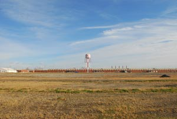

Located on a large, low patch of land at the mouth of the Gabaret Slough, beyond the early levees west of Granite City and Madison, is the site of the former Granite City Army Depot. Selected during World War I as the site of a major army supply installation, the center did not actually see use until World War II. In April 1942 construction began, and by August that same year the Granite City Engineer Depot was operational. During the war the depot grew rapidly, with over 4,500 railroad cars of material passing through its gates in July 1943. In 1944 employment reached 5,200 people, with over 1,500 officers and 2,000 enlisted men receiving training in engineer supply and maintenance functions at the depot.
While the post-war history of this installation has been one of gradual decline, administrative realignment, and ultimately closure, the consolidated land that once housed the depot has gone on to play a crucial role in the economy of the region. In a key decision following the closure, the army, in conversation with area leaders, decided against subdividing the land and instead moved forward with a single-owner development plan for the entire 800-acre parcel. Regional and state investment mobilized to form the Tri-Cities Regional Port District—an incorporated entity that continues to manage and develop a mixed-use business and industrial park. At the heart of this real estate strategy was the construction and marketing of what district leaders dubbed America’s Central Port. With two riverside harbors—one above Lock No. 27 and the other just south of the mouth of the Chain of Rocks Canal—the port is one of only a few semi-public landings in the region. In addition to handling aggregates, fertilizer, asphalt, petroleum, and grain, the broader district is home to a new ethanol plant and the pneumatic bubble structure of Airgas Specialty Products.